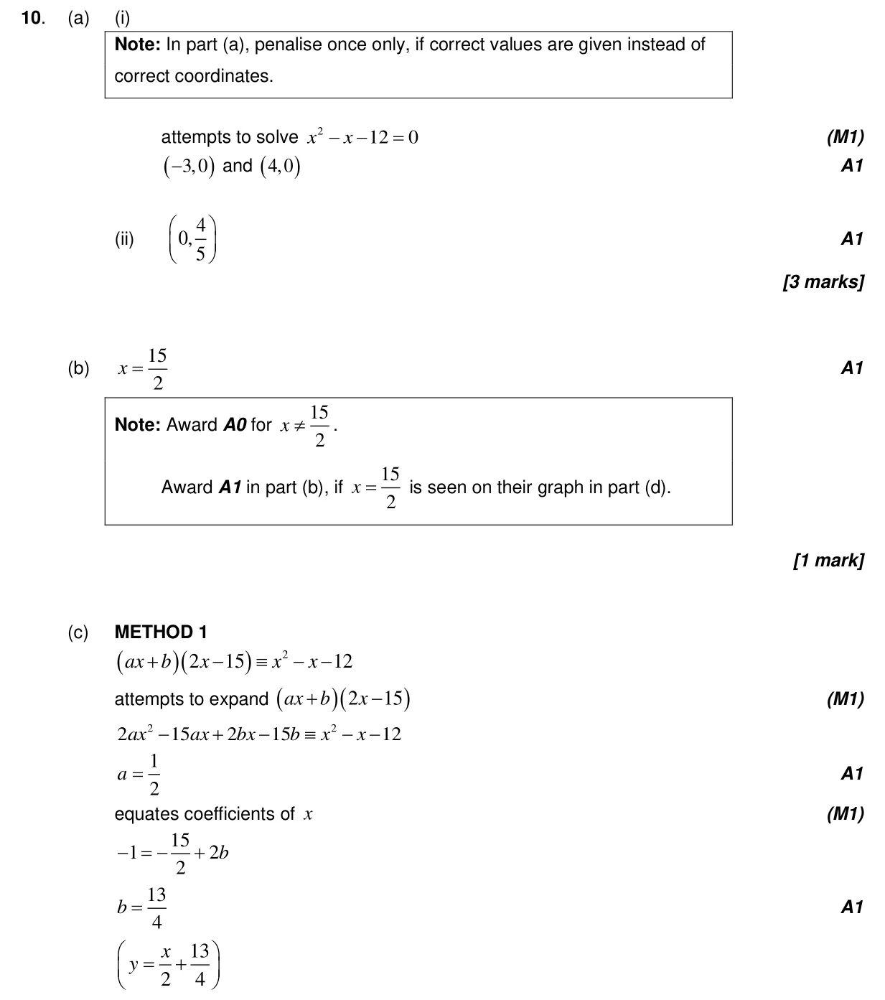
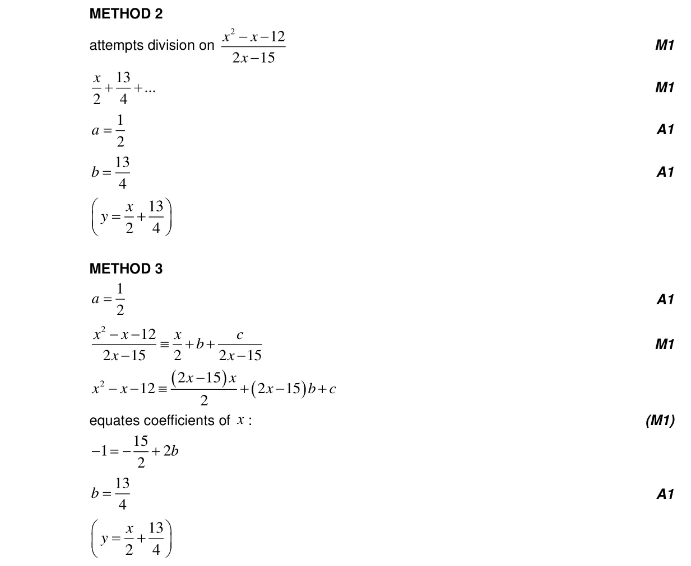
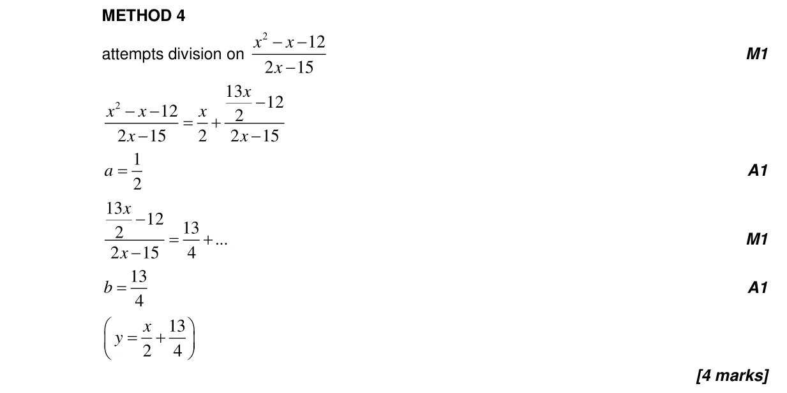
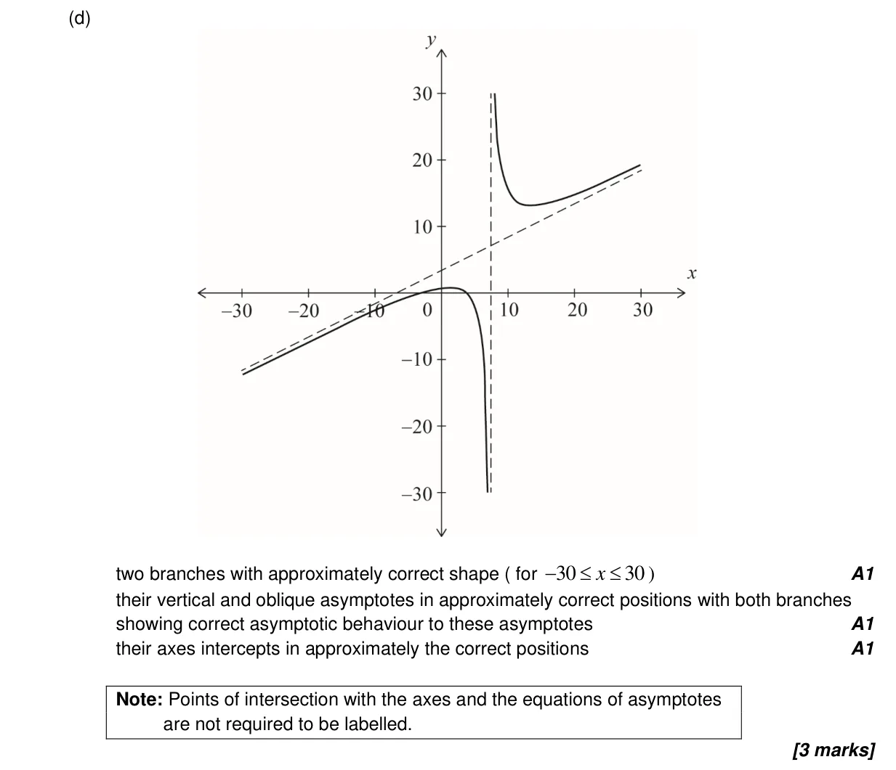
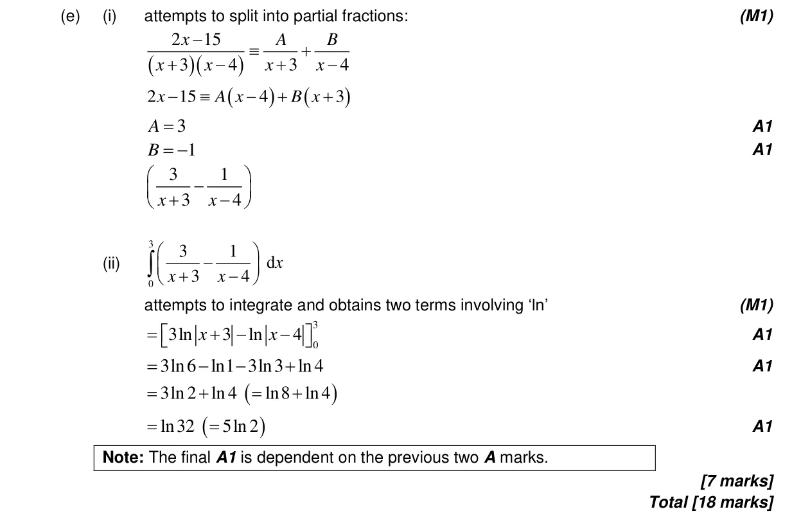

2.13 Rational functions with a quadratic numerator or denominator5.15 Further standard derivatives and integrals1.11 Partial fractions1.7 Laws of exponents and logarithms2.12 Polynomial functions: factor and remainder theorems, sum and product of roots2.7 Solutions of quadratic equations and inequalities, discriminant and nature of roots2.3 Graphs of functions
Question

Markscheme




